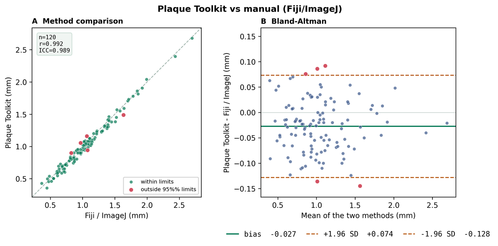

Companion to agreement/README.md. It computes Pearson r,
ICC(A,1) (absolute agreement), and Bland–Altman bias + 95% limits of agreement, using the
same maths that validated the toolkit itself (ICC 0.97).
One row per plaque, with two numeric columns: the tool measurement and the manual reference (same plaques, both methods).
| plaque_id | toolkit_mm | manual_mm |
|---|---|---|
| 1 | 1.038 | 1.052 |
| 2 | 1.138 | 1.192 |
| 3 | 0.914 | 0.937 |
Column names are auto-detected (containing tool/toolkit/auto/precise vs
manual/fiji/imagej/hand/reference), or set them with --tool / --manual.
To measure the same plaques both ways, trace them in Fiji and export the tool's per-plaque CSV, then
line them up by plaque.
Double-click Run Agreement (tool vs manual).bat — drop your CSV on it, or run it
to use the bundled example. Or from the command line:
python agreement.py --make-example # writes example_agreement.csv
python agreement.py example_agreement.csv --unit mm --what "plaque diameter" --out resultsYou get: a two-panel figure (PNG/SVG/PDF), a stats CSV, and a report.md with
a paste-ready sentence + interpretation.

| n | Pearson r | ICC(A,1) | bias | 95% LoA | slope |
|---|---|---|---|---|---|
| 120 | 0.99 | 0.99 (excellent) | −0.027 mm (−2.6%) | −0.128 to +0.074 mm | 0.99 |
Plaque diameter measured with Plaque Toolkit agreed with Fiji/ImageJ (n = 120): Pearson r = 0.99, ICC(A,1) = 0.99 (excellent agreement). Bland–Altman analysis showed a mean bias of −0.027 mm (−2.6%) with 95% limits of agreement of −0.128 to +0.074 mm, and a regression slope of 0.99 (1.0 = no proportional bias).
Drag the sliders and watch the plots + verdict update. This is simulated data — it shows how bias, scatter and proportional bias each change the picture and the ICC.
Notice: bias slides the whole cloud up/down (and drops the ICC while r stays high — that's why ICC, not r, is the agreement statistic). More scatter widens the limits of agreement. A non-zero proportional slope tilts the cloud — the methods disagree more at larger sizes.